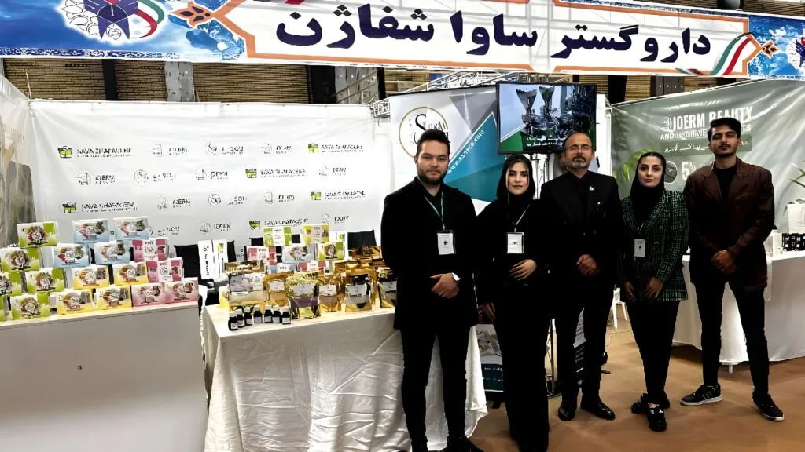

<div class="container-fluid rounded-5 animate__animated animate__fadeIn animate__delay-1s  ">
    <div class="row d-flex justify-content-center align-items-center" style="margin-top: 40px;">
        <div class="col-12 col-md-6 d-flex justify-content-center align-items-center flex-column rounded-5 w-75">

            <div class="swiper myslider mt-4 rounded-4" style="max-width: 950px;">
                <div class="swiper-wrapper">
                    <div class="swiper-slide">
                        
                    </div>

                </div>
            </div>
            <div
                style="margin-top:40px; font-weight: bold; font-size: 18px; color: #0c5460;width: 100%;text-align: right;">
                تعداد بازدید: <span id="viewCount">0</span>
            </div>

            <p class="new-line mt-4" style="color: #0c5460; font-size: 20px; text-align: justify;">
                بیست و پنجمین کنگره ملی و یازدهمین کنگره بین‌المللی پژوهش و فناوری دانشجویان علوم پزشکی کشور با
                حضور گسترده‌ی اساتید، پزشکان، دانشجویان و فعالان حوزه سلامت، در شهر ارومیه برگزار شد. این رویداد
                علمی معتبر، بستری برای تبادل دانش، نمایش دستاوردهای پژوهشی و گسترش همکاری‌های علمی میان
                دانشگاه‌ها و فعالان حوزه سلامت فراهم آورد.

                در این محفل علمی برجسته، شرکت ساوا شفاژن به عنوان یکی از تولیدکنندگان پیشرو در عرصه محصولات
                سلامت‌محور و دانش‌بنیان، حضور فعال و موثر داشت.
            </p>

            <h4 class="iron mt-3" style="color:#186600;">تجلیل از پژوهشگران جوان با حمایت ساوا شفاژن</h4>
            <P class="new-line" style="color: #0c5460; margin-top: 30px; font-size: 20px; text-align: justify;">
                در راستای مسئولیت اجتماعی و حمایت از نوآوری در حوزه سلامت، شرکت ساوا شفاژن با هدف ایجاد پیوند
                میان صنعت و پژوهش‌های دانشگاهی، اقدام به انتخاب سه مقاله علمی برتر در حوزه‌های مرتبط با محصولات
                این شرکت نمود. در مراسمی صمیمانه، از ارائه‌دهندگان این مقالات با اهدای جوایز ویژه تجلیل شد.

                این مشارکت نشان‌دهنده‌ی تعهد ساوا شفاژن به رشد علم و فناوری در حوزه سلامت، و حمایت از نسل آینده
                پژوهشگران علوم پزشکی کشور است.
            </P>
        </div>
    </div>
</div>